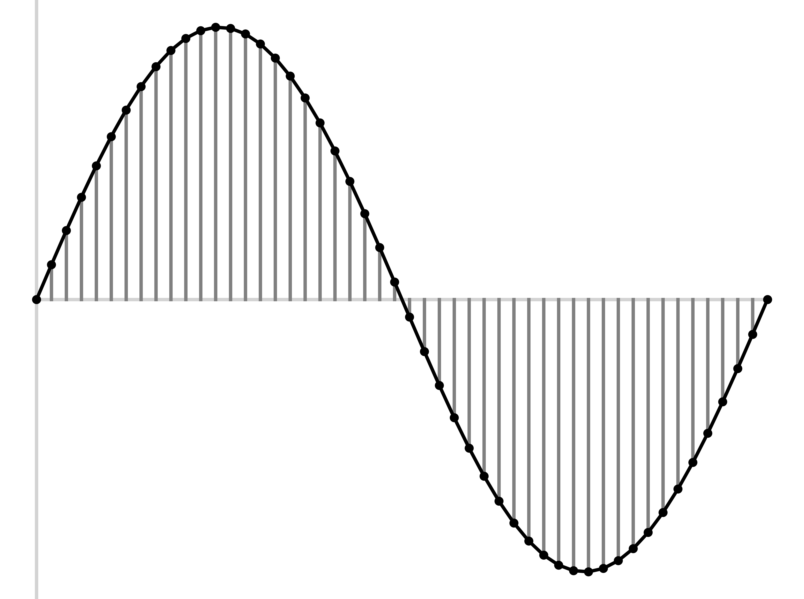

We’ve talked a bunch about how to display sound files
We’ve talked about how to measure sound files
We’ve even talked about how to manipulate sound files
… but what is a sound file anyways?
Audio Capture Review
Uncompressed WAV Audio
Why we compress sound
Lossless Compression formats
Lossy Compression formats
Electronic measurement of amplitude followed by quantization
This is also called ‘Pulse Code Modulation’ or PCM



At a certain bit depth (e.g. precision of amplitude measurement)
… along with a sampling rate
This gives rise to…
A Header chunk
A Format chunk
A Data Chunk
The first 12 positions
‘This is a RIFF file’
The Filesize
‘This is a WAVE format’
‘FMT’, then the length of the format chunk
The Format of the data
The number of Channels
The sampling rate
‘DATA’, then the length of this subchunk
Lots and Lots of Samples, with channels paired
This contains the actual audio!

It’s Apple’s version of WAV
There are slight computational differences to the format
AIFF can carry more metadata, but isn’t always supported by applications
Changing from WAV to AIFF and back is easy and doesn’t affect quality!
The sample data is right there and easy to read in
WAV has perfect fidelity
It’s able to be very, very large
PCM data will always be able to be read, so it’s archival
You don’t spend any cycles compressing the data
44,100 16-bit datapoints per second
~1400 kpbs (Kilobits per second)
~10.5 megabytes per minute
This is a lot to send
Sending Complete files
Streaming the audio chunk-wise
I have a file, and you ask me for it
I transmit the entire file to you, whole
Once it downloads, you store it on your device
You play back the file
Break the audio into chunks of a sensible size
Send the audio chunk-by-chunk to the device when it starts playback
Buffer the chunks on the local device in case of slowdowns or losses
Play back the file from the buffer, adding new chunks as they arrive
You’ve got the whole file at the end, if all chunks are streamed
… but we still want to send sound in formats that are as small as possible
This usually involves making an Audio Codec
Codecs encode and decode signals
(This is a portmanteau of encoder-decoder)
In the audio world, it encodes the sample amplitudes into a different and more space-efficient format
Audio file formats are packages including data in one or more codecs
All videos include audio which is stored or compressed with a codec
It’s possible to have different codecs with the same ‘file type’
Many codecs are compressed
Loading Data: How long does it take to open a file, and how much RAM does it require?
Storage Cost: How much drive space do you need to store what you have?
Bandwidth Cost: How much data do you have to send to share a sound
Bandwidth Limits: How quickly can you send data?
It takes longer to open a bigger file
It requires more disk reading and writing
Slow machines take longer to load larger files
Large files take more space in memory
It’s not free to send data into and out of data centers
US Cell Provides charge some of the highest rates for data
Transferring larger files between machines ‘clogs’ internal networks more
US Internet Providers are the among the worst in the developed world
Your Cell Phone can’t necessarily ‘keep up’ with downloading uncompressed data
Some situations are even lower bandwidth (e.g. radio transmission, satellite calls)
Smaller audio formats mean more people can be served by the same server/cell tower
We want our audio files to take up as little space as we can get away with
We want our voice and audio transmissions to use as little bandwidth as we can
We want to be able open files even on crappy computers
We need to be able to stream audio faster than it can be listened to
Compression just turns a file into a smaller file with either…
Exactly the same amount of information (Lossless Compression)
Less information, but losing things you likely don’t care about (Lossy compression)
Compression has a computational cost!
You could spend a career here
Better data compression could make you a billionaire
We are just barely scratching the surface, and focusing on audio
File compression technology is incredibly cool
“How can we make this audio smaller, while retaining every last bit of information we started it”
Lossless audio compression throws away nothing
You should be able to recover the exact PCM signal from a lossless file
Use file compression tools designed for other files (e.g. zip, 7z, zstd, rar)
Zip the WAV file, and then unzip it before playing
DO NOT DO THIS
This achieves very poor compression, and requires you to undo it for each listening
FLAC is the ‘Free, Lossless Audio Codec’
It’s a free (as in libre and gratis) way to compress audio files
This results in .flac files
Step 1: Split the audio into frames
Step 2: Approximate the frames
Step 3: Find the residuals
Step 4: Encode the residuals
Step 5: Save the result
Break the file into frames, with a default of 4096 samples
The frame size is tunable for better compression
Because it’s done framewise, it’s well optimized for streaming!
Use either LPC or a polynomial fit to approximate the signal
Linear Predictive Coding does a great job of capturing the spectral shape
Very simple frames (e.g. silence, or a single bass note) may be more easily approximated with a polynomial
This will get you most of the way there with very little data
You don’t have to model the signal exactly in this step
You’ve stored a big chunk of the signal in very little data
Now subtract the modeled signal from the input signal
This yields a much simpler signal called the ‘Residuals’
Each frame has LPC/Polynomial Coefficients, Channel Difference, and encoded residuals
Also save metadata (e.g. Sampling Rate, Bit Depth, Artist, Album, Song Name, Year, etc)
Read the frame’s data
Generate the signal represented by the LPC and Polynomial
Unpack the residuals and add them to the LPC signal
Create the other channel using the stored difference
Play back the waveform
With the LPC and residuals, you can recover the exact signal and recreate the WAV
This is high fidelity
You are just being clever in storing the waveform
FLAC can reduce file sizes to 50-60% of the original!
Lossless compression asks “What can I do to make the file smaller while keeping the same exact data?”
Lossy compression asks “What can I throw away to make the file smaller while keeping the human from noticing?”
Lossy compression is tuned to human perception!
mp3 is the most well known lossy codec
Opus and Vorbis are free and libre lossy codecs
LDAC, AAC, aptX are commonly used to send audio to bluetooth headphones
There are dedicated codecs for voice that we’ll talk about next time!
Using things like Discrete Cosine Transform and LPC to capture the ‘most important’ elements
Also uses psychoacoustic knowledge
“Let’s throw away or simplify the stuff that doesn’t matter as much to the human!”


Frame the data (mp3 is usually 1152 samples per frame)
Use a Modified Discrete Cosine Transform to turn the data into coefficients representing components in the frequency domain
Save more, less, or no detail for chunks of the signal based on how humans perceive sound
Now, save the coefficients efficiently
The Bitrate dictates how many bits are required to capture a second of audio
‘Variable Bitrate’ (VBR) is the same idea, but adapts well to varied complexity
Lower bitrate means more compression, but more data loss
This is independent of bit depth!
1400kbps wav
320kbps mp3
192kbps mp3
128kbps mp3
Uncompressed WAV
64kbps mp3
48kbps mp3
32kbps mp3
8kbps mp3
Original from https://www.youtube.com/watch?v=wBnevSbdb7g
It just uses longer blocks, and a few other techniques to improve compression
It’s more efficient, and yields better quality for the same filesize
It’s not free, and not supported by as many devices
There are some tweaks, but it’s the same basic idea
Quality is at or beyond mp3 at similar bitrates
It’s less widely supported, as it’s newish (~2011)
“Free and open” matters because…
mp3 has had lots of battles with content cartels and patent trolls
AAC is heavily patent encumbered until 2031
Voice Codecs (next time) are a hellscape of licensing and patents
insert gigantic rant about proprietary standards
Compression is irreversible
Humans generally struggle to differentiate wav and >256kbps mp3
Loss that you can’t hear can still affect measurements of speech
Lower bitrates will have stronger effects, but be careful!
What do we use for speech?
They’re meant to compress anything
Can we do better if we know we’re encoding speech?
WAV is simplistic and samplistic
Compression is useful for working with audio
Lossless compression saves space and sacrifices nothing
Lossy compression makes much smaller files, but at a very real cost